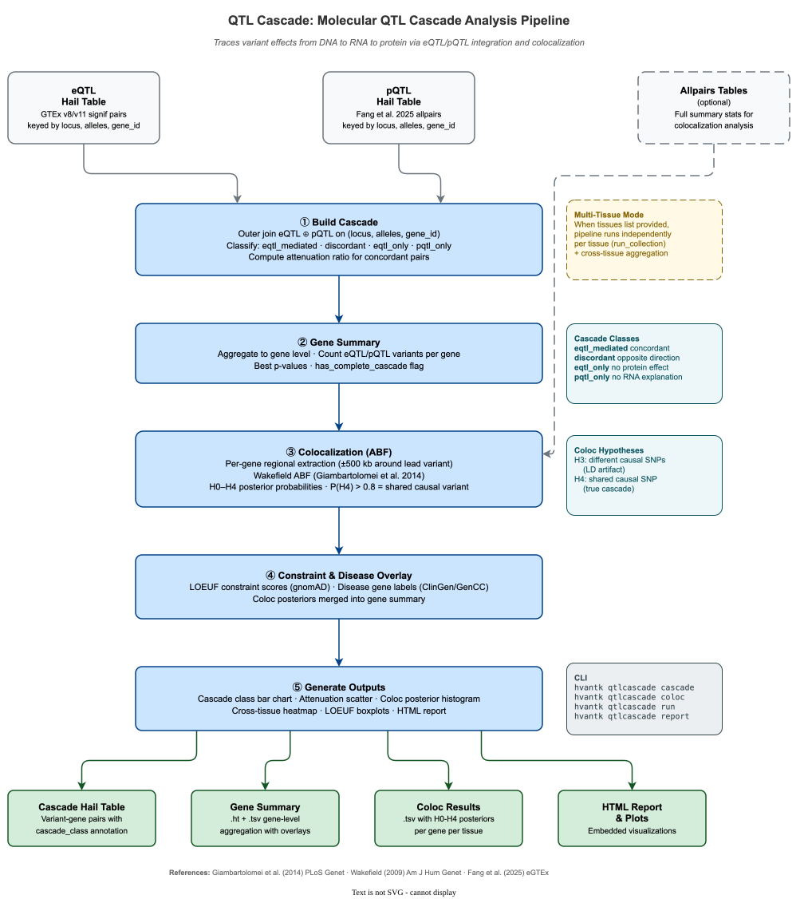

QTL Cascade: Molecular QTL Cascade Analysis¶
QTL Cascade is a module within hvantk that traces variant effects across molecular layers — from DNA to RNA (eQTL) to protein (pQTL) — to identify variants whose transcriptomic effects propagate to the proteome. It integrates colocalization analysis to distinguish true signal propagation from LD artifacts.

Figure 1. QTL Cascade pipeline — from eQTL/pQTL table loading through cascade join, gene-level aggregation, colocalization ABF, constraint/disease overlay, and output generation.
Overview¶
The QTL Cascade module provides an end-to-end pipeline for multi-omics QTL integration:
Primary Functionality¶
- Cascade Join — Outer-join eQTL and pQTL tables on
(locus, alleles, gene_id), classify variant–gene pairs into mechanistic categories - Gene Summary — Aggregate cascade results to gene level with variant counts, best p-values, and
has_complete_cascadeflag - Colocalization ABF — Approximate Bayes Factor analysis (Giambartolomei et al. 2014) to test whether eQTL and pQTL share the same causal variant
- Constraint & Disease Overlay — Annotate genes with LOEUF scores and disease-gene labels
- Multi-Tissue Mode — Run independently per tissue with cross-tissue aggregation
Key Features¶
- Triple-Key Join — Join on
(locus, alleles, gene_id)prevents false cascades from LD - Four Cascade Classes — eqtl_mediated, discordant, eqtl_only, pqtl_only
- Hail + NumPy Hybrid Coloc — Bulk Spark extraction + per-gene NumPy ABF computation
- H0–H4 Posterior Probabilities — Five hypotheses including shared causal variant (H4)
- Configurable Priors — Wakefield (2009) ABF parameters and Giambartolomei (2014) coloc priors
Quick Start¶
Command-Line Interface¶
# Basic cascade join (no coloc)
hvantk qtlcascade cascade \
--eqtl-ht /data/eqtl_liver.ht \
--pqtl-ht /data/pqtl_liver.ht \
-o /results/cascade.ht
# Full pipeline with coloc and overlays
hvantk qtlcascade run \
--eqtl-ht /data/eqtl_liver.ht \
--pqtl-ht /data/pqtl_liver.ht \
--eqtl-allpairs /data/eqtl_allpairs_liver.ht \
--pqtl-allpairs /data/pqtl_allpairs_liver.ht \
--constraint-ht /data/gnomad_metrics.ht \
--disease-genes-ht /data/clingen.ht \
-o /results/qtlcascade
# Multi-tissue run
hvantk qtlcascade run \
--eqtl-ht /data/eqtl.ht \
--pqtl-ht /data/pqtl.ht \
--eqtl-allpairs /data/eqtl_allpairs.ht \
--pqtl-allpairs /data/pqtl_allpairs.ht \
--tissues "Liver,Heart,Lung" \
-o /results/qtlcascade_multi
# View execution plan without running
hvantk qtlcascade run \
--eqtl-ht /data/eqtl.ht \
--pqtl-ht /data/pqtl.ht \
-o /results/qtlcascade \
--dry-run
Python API¶
from hvantk.algorithms.qtlcascade import CascadeConfig, CascadePipeline
# Configure pipeline
config = CascadeConfig(
eqtl_ht="/data/eqtl_liver.ht",
pqtl_ht="/data/pqtl_liver.ht",
eqtl_allpairs_ht="/data/eqtl_allpairs_liver.ht",
pqtl_allpairs_ht="/data/pqtl_allpairs_liver.ht",
constraint_ht="/data/gnomad_metrics.ht",
disease_genes_ht="/data/clingen.ht",
output_dir="/results/qtlcascade",
)
# Run single-tissue pipeline
pipeline = CascadePipeline(config)
result = pipeline.run()
# Inspect results
print(f"Cascade genes: {result.n_cascade_genes}")
print(f"Class counts: {result.class_counts}")
if result.coloc_df is not None:
n_coloc = (result.coloc_df["H4"] > 0.8).sum()
print(f"Colocalised genes: {n_coloc}")
Cascade Classes¶
The cascade join classifies each variant–gene pair into one of four mechanistic categories (Fang et al. 2025, Fig 4C):
| Class | Label | Description |
|---|---|---|
eqtl_mediated |
eQTL-mediated pQTL | Concordant eQTL + pQTL (same effect direction) |
discordant |
Discordant | Both present, opposite effect directions |
eqtl_only |
eQTL only | eQTL without pQTL evidence |
pqtl_only |
pQTL only | pQTL without eQTL evidence |
The classification logic:
eqtl_mediated: eQTL_beta × pQTL_beta > 0 (concordant direction)
discordant: both present, product ≤ 0 (opposite direction)
eqtl_only: eQTL defined, pQTL missing
pqtl_only: pQTL defined, eQTL missing
Attenuation Ratio¶
For eqtl_mediated pairs, the pipeline computes the attenuation ratio:
A value near 0 indicates full propagation (mRNA effect fully passed to protein); near 1 indicates high attenuation (mRNA effect lost at protein level).
Pipeline Stages¶
The cascade pipeline executes four stages:
| Stage | Enum | Description |
|---|---|---|
| 1 | BUILD_CASCADE |
Outer-join eQTL ⊕ pQTL on (locus, alleles, gene_id), classify pairs |
| 2 | RUN_COLOC |
Colocalization ABF per gene (optional — requires allpairs tables) |
| 3 | BUILD_GENE_SUMMARY |
Aggregate to gene level with variant counts, p-values, and coloc overlay |
| 4 | GENERATE_OUTPUTS |
Plots, TSV exports, HTML report |
Colocalization ABF¶
The coloc module tests whether eQTL and pQTL signals share the same causal variant using Approximate Bayes Factors (Giambartolomei et al. 2014).
Five Hypotheses¶
| Hypothesis | Meaning |
|---|---|
| H0 | No association with either trait |
| H1 | Association with eQTL only |
| H2 | Association with pQTL only |
| H3 | Both associated, different causal variants (LD artifact) |
| H4 | Both associated, shared causal variant (true cascade) |
P(H4) > 0.8 is the default threshold for declaring colocalization.
ABF Formula¶
Per-variant log ABF (Wakefield 2009, Eq. 2):
Default prior variance W = 0.04 (appropriate for quantitative-trait QTLs).
Implementation¶
The coloc module uses a Hail + NumPy hybrid approach for efficiency:
- Bulk extraction (Hail/Spark) — Inner-join allpairs tables filtered to cascade genes in a single Spark job
- Regional windowing (Python) — ±500 kb around lead eQTL variant per gene
- Per-gene ABF (NumPy) — Vectorised ABF computation and posterior calculation
Default Priors¶
From Giambartolomei et al. (2014), Table 1:
| Parameter | Default | Description |
|---|---|---|
p1 |
1×10⁻⁴ | P(variant causal for trait 1 only) |
p2 |
1×10⁻⁴ | P(variant causal for trait 2 only) |
p12 |
1×10⁻⁵ | P(variant causal for both traits) |
W |
0.04 | Prior variance on effect size |
GWAS → Effector Colocalization (gwas-coloc)¶
A complementary workflow to the eQTL × pQTL cascade above. Instead of joining two molecular QTLs, it colocalizes a GWAS locus against cis-eQTL to nominate the effector gene, then optionally confirms it with SuSiE-RSS + coloc.susie fine-mapping.
- GWAS source — a FinnGen R10 endpoint (remote-tabix; no download).
- eQTL source — an eQTL Catalogue dataset, e.g. GTEx
QTD000251(remote-tabix). - Screen — ABF with trait-specific priors (W₁ = 0.04 for the case-control GWAS, W₂ = 0.0225 for the quantitative eQTL) ranks every overlapping cis gene by P(H4). Reuses the same validated
compute_log_abfkernel as the cascade coloc. - Confirmation (optional, on by default) — pure-Python SuSiE-RSS fine-maps both traits against a 1000G reference-LD matrix for a configurable super-population (default
EUR, via--superpop);coloc.susietests for a shared credible set. This separates a genuine colocalization from a single-variant-ABF artifact (a strong GWAS leaning on a weak eQTL). No externalR/bcftools— the SuSiE-RSS +coloc.susiemath is NumPy (hvantk.algorithms.qtlcascade.susie) and the LD genotypes stream viapysam. - Output — a provenance-stamped JSON report + a per-gene TSV + a verdict.
Verdicts¶
| Verdict | Meaning |
|---|---|
CONFIRMED |
ABF PP4 ≥ threshold and coloc.susie PP4 ≥ threshold |
REFUTED |
ABF says coloc, but fine-mapping finds no shared credible set (single-variant-ABF artifact) |
SUGGESTIVE |
ABF coloc only — fine-mapping skipped (--no-fine-map) or the LD reference was unreachable |
INCONCLUSIVE |
Fine-mapping ran but produced no coloc.susie PP4 (e.g. too few overlapping variants) |
NO COLOC |
ABF PP4 below threshold, or the gene of interest is absent from the results |
Fine-mapping is optional and pure-Python (issue #193). It needs only the core hvantk dependencies (
numpy,pysam) plus a 1000G GRCh38 LD reference — auto-streamed over the network and cached under--ld-cache-dir(default:$HVANTK_LD_CACHE, else~/.cache/hvantk/1kg), or supplied offline with--ld-vcf <local.vcf.gz>. No externalR/bcftools/curl. If the LD reference is unreachable (and no--ld-vcfis given), run--no-fine-mapfor the ABF screen alone — note--no-fine-maponly removes the LD-reference network dependency; the ABF screen still streams the GWAS/eQTL summary statistics over the network. The default verdict threshold is PP4 ≥ 0.5 —coloc.susieis more conservative than single-variant ABF.
See the worked example — AF → MYOZ1 (CONFIRMED) versus a CHD 17q21/NSF look-alike (REFUTED).
Multi-Tissue Mode¶
When --tissues is provided, the pipeline runs independently per tissue via run_collection(), then generates:
- Per-tissue outputs — Cascade HT, gene summary, coloc results for each tissue
- Cross-tissue heatmap — Cascade class counts across tissues
- Collection report — Combined HTML report
# Multi-tissue with Fang et al. tissues
hvantk qtlcascade run \
--eqtl-ht /data/eqtl.ht \
--pqtl-ht /data/pqtl.ht \
--tissues "Liver,Heart,Lung,Colon,Thyroid" \
-o /results/cascade_multi
# Python API
config = CascadeConfig(
eqtl_ht="/data/eqtl.ht",
pqtl_ht="/data/pqtl.ht",
tissues=["Liver", "Heart", "Lung", "Colon", "Thyroid"],
output_dir="/results/cascade_multi",
)
pipeline = CascadePipeline(config)
results = pipeline.run_collection() # Dict[str, CascadeResult]
for tissue, res in results.items():
print(f"{tissue}: {res.n_cascade_genes} genes")
Output Files¶
output_dir/
├── per_tissue/
│ ├── liver/
│ │ ├── cascade.ht/ # Cascade Hail Table (variant-gene pairs)
│ │ ├── gene_summary.ht/ # Gene-level summary Hail Table
│ │ ├── gene_summary.tsv # TSV export
│ │ └── coloc_results.tsv # Coloc H0-H4 posteriors per gene
│ ├── heart/
│ │ └── ...
│ └── ...
├── plots/
│ ├── liver_cascade_classes.png # Cascade class bar chart
│ ├── liver_coloc_posteriors.png # Coloc P(H4) histogram
│ ├── cross_tissue_heatmap.png # Cross-tissue comparison
│ └── ...
└── qtlcascade_report.html # Combined HTML report
Cascade Table Schema¶
The cascade Hail Table (cascade.ht) is keyed by (locus, alleles, gene_id):
| Field | Type | Description |
|---|---|---|
eqtl_beta |
float64 | eQTL effect size |
eqtl_se |
float64 | eQTL standard error |
eqtl_pvalue |
float64 | eQTL p-value |
pqtl_beta |
float64 | pQTL effect size |
pqtl_se |
float64 | pQTL standard error |
pqtl_pvalue |
float64 | pQTL p-value |
cascade_class |
str | One of: eqtl_mediated, discordant, eqtl_only, pqtl_only |
attenuation_ratio |
float64 | 1 - |pQTL_beta|/|eQTL_beta| (eqtl_mediated only) |
tissue |
str | Tissue label |
Gene Summary Table Schema¶
The gene summary Hail Table (gene_summary.ht) is keyed by gene_id:
| Field | Type | Description |
|---|---|---|
n_eqtl_variants |
int64 | Count of eQTL variants for this gene |
n_pqtl_variants |
int64 | Count of pQTL variants for this gene |
n_concordant |
int64 | Count of eqtl_mediated pairs |
n_discordant |
int64 | Count of discordant pairs |
best_eqtl_pvalue |
float64 | Minimum eQTL p-value |
best_pqtl_pvalue |
float64 | Minimum pQTL p-value |
has_complete_cascade |
bool | n_concordant > 0 |
oe_lof_upper |
float64 | LOEUF score (if constraint overlay provided) |
is_disease_gene |
bool | Disease-gene flag (if overlay provided) |
coloc_max_h4 |
float64 | Maximum P(H4) across tissues (if coloc run) |
coloc_n_tissues |
int64 | Number of tissues with P(H4) > 0.8 |
Coloc Results Format¶
The coloc results TSV (coloc_results.tsv):
| Column | Description |
|---|---|
gene_id |
Ensembl gene ID |
tissue |
Tissue name |
H0 – H4 |
Posterior probabilities for each hypothesis |
n_variants |
Number of variants in the coloc region |
CLI Reference¶
hvantk qtlcascade cascade¶
Build the eQTL ⊕ pQTL outer join with cascade classification.
hvantk qtlcascade cascade [OPTIONS]
Required:
--eqtl-ht TEXT Path to eQTL Hail Table
--pqtl-ht TEXT Path to pQTL Hail Table
-o, --output TEXT Output cascade Hail Table path
Optional:
--tissue TEXT Filter to this tissue
--eqtl-p FLOAT eQTL p-value threshold [default: 5e-8]
--pqtl-p FLOAT pQTL p-value threshold [default: 5e-8]
--overwrite Overwrite existing output
hvantk qtlcascade coloc¶
Run colocalization ABF on a set of cascade genes.
hvantk qtlcascade coloc [OPTIONS]
Required:
--eqtl-allpairs TEXT Path to allpairs eQTL Hail Table
--pqtl-allpairs TEXT Path to allpairs pQTL Hail Table
--cascade-genes TEXT File with one gene_id per line
-o, --output TEXT Output TSV path
Optional:
--tissue TEXT Filter allpairs to this tissue
--window-kb INTEGER Regional window ±kb [default: 500]
hvantk qtlcascade gwas-coloc¶
GWAS → effector colocalization (FinnGen × eQTL Catalogue) with optional SuSiE fine-map confirmation.
hvantk qtlcascade gwas-coloc [OPTIONS]
Required:
--endpoint TEXT FinnGen R10 endpoint code (e.g. I9_AF)
--chrom TEXT Chromosome (GRCh38, no 'chr')
--lead INTEGER Lead variant position (GRCh38)
--eqtl TEXT eQTL Catalogue dataset id / URL / local tabix (e.g. QTD000251)
-o, --output-dir TEXT Output directory
Optional:
--eqtl-study TEXT eQTL Catalogue study id [default: QTS000015]
--window-kb INTEGER Regional window ±kb around the lead [default: 500]
--gene TEXT ENSG to confirm [default: the ABF-top gene]
--fine-map/--no-fine-map Run SuSiE/coloc.susie confirmation [default: fine-map]
--gwas-n INTEGER GWAS sample size (required for fine-mapping)
--eqtl-n INTEGER eQTL sample size (required for fine-mapping)
--superpop TEXT 1000G super-population for the LD reference [default: EUR]
--ld-cache-dir TEXT Cache directory for the 1000G LD reference
--ld-vcf TEXT Local VCF LD reference instead of remote 1000G (offline runs)
hvantk qtlcascade run¶
Full pipeline: cascade + gene summary + coloc + report.
hvantk qtlcascade run [OPTIONS]
Required:
--eqtl-ht TEXT Path to eQTL Hail Table
--pqtl-ht TEXT Path to pQTL Hail Table
-o, --output-dir TEXT Output directory
Optional (coloc):
--eqtl-allpairs TEXT Allpairs eQTL HT (enables coloc)
--pqtl-allpairs TEXT Allpairs pQTL HT (enables coloc)
--window-kb INTEGER Coloc window ±kb [default: 500]
Optional (overlays):
--constraint-ht TEXT gnomAD constraint HT (LOEUF)
--disease-genes-ht TEXT Disease-gene HT
Optional (execution):
--tissues TEXT Comma-separated tissue list (multi-tissue mode)
--eqtl-p FLOAT eQTL p-value threshold [default: 5e-8]
--pqtl-p FLOAT pQTL p-value threshold [default: 5e-8]
--no-plots Skip plot generation
--no-report Skip HTML report
--overwrite Overwrite existing outputs
--dry-run Show plan without executing
hvantk qtlcascade report¶
Generate HTML report from existing results.
hvantk qtlcascade report [OPTIONS]
Required:
-o, --output TEXT Output HTML path
Optional:
--gene-summary TEXT Gene summary TSV
--coloc-results TEXT Coloc results TSV
--plots-dir TEXT Directory containing plot PNGs
--title TEXT Report title [default: "QTL Cascade Analysis Report"]
Python API Reference¶
Core Functions¶
build_cascade¶
from hvantk.algorithms.qtlcascade import build_cascade
ht = build_cascade(
eqtl_ht_path="/data/eqtl.ht",
pqtl_ht_path="/data/pqtl.ht",
output_path="/results/cascade.ht",
eqtl_p_threshold=5e-8,
pqtl_p_threshold=5e-8,
tissue="Liver", # optional tissue filter
overwrite=False,
)
Returns a Hail Table keyed by (locus, alleles, gene_id) with cascade classification fields.
build_cascade_gene_summary¶
from hvantk.algorithms.qtlcascade import build_cascade_gene_summary
gene_ht = build_cascade_gene_summary(
cascade_ht_path="/results/cascade.ht",
output_path="/results/gene_summary.ht",
constraint_ht_path="/data/gnomad_metrics.ht", # optional
disease_genes_ht_path="/data/clingen.ht", # optional
coloc_df=coloc_df, # optional pd.DataFrame
overwrite=False,
)
Returns a Hail Table keyed by gene_id with aggregated cascade evidence.
coloc_abf¶
from hvantk.algorithms.qtlcascade import coloc_abf
import numpy as np
result = coloc_abf(
eqtl_beta=np.array([0.5, 0.3, -0.1]),
eqtl_se=np.array([0.1, 0.1, 0.05]),
pqtl_beta=np.array([0.4, 0.2, -0.05]),
pqtl_se=np.array([0.1, 0.1, 0.05]),
p1=1e-4, p2=1e-4, p12=1e-5, W=0.04,
)
print(f"P(H4) = {result['H4']:.4f}")
# P(H4) ≈ 0.93 — strong evidence for shared causal variant
Returns dict with keys H0–H4, n_variants, lead_snp_h4_idx.
run_coloc_per_gene¶
from hvantk.algorithms.qtlcascade import run_coloc_per_gene
coloc_df = run_coloc_per_gene(
eqtl_allpairs_ht_path="/data/eqtl_allpairs.ht",
pqtl_allpairs_ht_path="/data/pqtl_allpairs.ht",
cascade_genes=["ENSG00000000003", "ENSG00000000005"],
tissue="Liver",
window_kb=500,
)
# Returns pd.DataFrame with columns: gene_id, tissue, H0-H4, n_variants
Pipeline Classes¶
CascadeConfig¶
from hvantk.algorithms.qtlcascade import CascadeConfig
config = CascadeConfig(
# Required
eqtl_ht="/data/eqtl.ht",
pqtl_ht="/data/pqtl.ht",
output_dir="/results/qtlcascade",
# Coloc (both or neither)
eqtl_allpairs_ht="/data/eqtl_allpairs.ht",
pqtl_allpairs_ht="/data/pqtl_allpairs.ht",
# Overlays
constraint_ht="/data/gnomad_metrics.ht",
disease_genes_ht="/data/clingen.ht",
# Multi-tissue
tissues=["Liver", "Heart", "Lung"],
# Thresholds
eqtl_p_threshold=5e-8,
pqtl_p_threshold=5e-8,
coloc_window_kb=500,
coloc_p1=1e-4,
coloc_p2=1e-4,
coloc_p12=1e-5,
coloc_W=0.04,
# Output options
generate_plots=True,
generate_report=True,
overwrite=False,
)
# Validate
errors = config.validate()
if errors:
for e in errors:
print(f"Error: {e}")
CascadePipeline¶
from hvantk.algorithms.qtlcascade import CascadePipeline
pipeline = CascadePipeline(config)
# Preview execution plan
pipeline.show_plan()
# Single-tissue run
result = pipeline.run(tissue="Liver")
# Multi-tissue run
results = pipeline.run_collection() # Dict[str, CascadeResult]
CascadeResult¶
# Access results
print(f"Tissue: {result.tissue}")
print(f"Cascade HT: {result.cascade_ht_path}")
print(f"Gene summary HT: {result.gene_summary_ht_path}")
print(f"Cascade genes: {result.n_cascade_genes}")
print(f"Class counts: {result.class_counts}")
# Coloc results (if available)
if result.coloc_df is not None:
print(f"Coloc genes: {len(result.coloc_df)}")
n_pass = (result.coloc_df["H4"] > 0.8).sum()
print(f"Colocalised (H4 > 0.8): {n_pass}")
Plotting Functions¶
from hvantk.algorithms.qtlcascade import (
plot_cascade_classes,
plot_attenuation,
plot_coloc_posteriors,
plot_cross_tissue_heatmap,
plot_loeuf_by_cascade_class,
)
# Cascade class distribution
plot_cascade_classes(
class_counts={"eqtl_mediated": 150, "discordant": 30,
"eqtl_only": 500, "pqtl_only": 200},
output_path="cascade_classes.png",
title="Cascade Classes — Liver",
)
# Coloc posterior histogram
plot_coloc_posteriors(
coloc_df,
output_path="coloc_posteriors.png",
title="Coloc P(H4) — Liver",
)
# Cross-tissue heatmap (requires multi-tissue results)
plot_cross_tissue_heatmap(
df, # DataFrame with gene_id, tissue, n_concordant columns
output_path="cross_tissue.png",
)
# LOEUF by cascade class (requires constraint overlay)
plot_loeuf_by_cascade_class(
gene_summary_df,
output_path="loeuf_boxplot.png",
)
Building Input Tables¶
The cascade pipeline requires eQTL and pQTL Hail Tables as input. Build them via the unified hvantk reprocess entry point (the cascade plugins have no built-in downloader, so --skip-download is required after manually placing raw files into the per-source directory passed as --raw-dir).
eQTL Table¶
# GTEx v11 (parquet directory)
hvantk reprocess gtex-eqtl:eqtls \
--raw-dir /data/gtex_v11/signif_pairs/ \
--output /data/eqtl_liver.ht \
--skip-download \
--plugin-arg source=gtex_v11 \
--plugin-arg tissue=Liver
# GTEx v8 (TSV)
hvantk reprocess gtex-eqtl:eqtls \
--raw-dir /data/gtex_v8/ \
--output /data/eqtl_liver.ht \
--skip-download \
--plugin-arg source=gtex_v8
# eQTLGen
hvantk reprocess gtex-eqtl:eqtls \
--raw-dir /data/eqtlgen/ \
--output /data/eqtl_blood.ht \
--skip-download \
--plugin-arg source=eqtlgen
# Allpairs for coloc (keep all p-values)
hvantk reprocess gtex-eqtl:eqtls \
--raw-dir /data/gtex_v11/allpairs/ \
--output /data/eqtl_allpairs_liver.ht \
--skip-download \
--plugin-arg source=gtex_v11 \
--plugin-arg tissue=Liver \
--plugin-arg p_threshold=0
pQTL Table¶
# Fang et al. (2025) pQTL data
hvantk reprocess pqtl:metrics \
--raw-dir /data/fang_pqtl/ \
--output /data/pqtl_liver.ht \
--skip-download \
--plugin-arg source=gtex_fang \
--plugin-arg tissue=Liver \
--plugin-arg hgnc_ht=/data/hgnc_lookup.ht
# Allpairs for coloc (omit p_threshold to keep all pairs)
hvantk reprocess pqtl:metrics \
--raw-dir /data/fang_pqtl/ \
--output /data/pqtl_allpairs_liver.ht \
--skip-download \
--plugin-arg source=gtex_fang \
--plugin-arg tissue=Liver \
--plugin-arg hgnc_ht=/data/hgnc_lookup.ht
Note: Fang pQTL data uses gene symbols. Pass the HGNC lookup table via
--plugin-arg hgnc_ht=<path>(built withhvantk reprocess hgnc:lookup, keyed byhgnc_idwith agene_symbolfield); it maps each symbol to its Ensembl gene ID for the cascade join.
Module Structure¶
hvantk/algorithms/qtlcascade/
├── __init__.py # Public API surface
├── constants.py # Thresholds, priors, tissue mappings, source IDs
├── cascade.py # Outer join + cascade classification
├── coloc.py # Colocalization ABF (Hail + NumPy hybrid)
├── gene_summary.py # Gene-level aggregation + overlays
├── pipeline.py # CascadeConfig, CascadePipeline, CascadeResult
├── plot.py # Visualisations (cascade classes, attenuation, coloc, heatmap)
├── report.py # HTML report generation
├── gwas_coloc.py # GWAS × eQTL ABF coloc (FinnGen × eQTL Catalogue, remote-tabix)
├── susie.py # Pure-NumPy SuSiE-RSS + coloc.susie kernel (ports susieR/coloc)
├── finemap.py # Optional fine-map confirmation (pysam 1000G LD; configurable --superpop / --ld-vcf)
└── gwas_pipeline.py # GwasColocConfig, run_gwas_coloc_pipeline (+ provenance report)
References¶
- Giambartolomei, C. et al. (2014) Bayesian Test for Colocalisation between Pairs of Genetic Association Studies Using Summary Statistics. PLoS Genet 10(5):e1004383.
- Wakefield, J. (2009) Bayes factors for genome-wide association studies: comparison with P-values. Am J Hum Genet 84(1):60-71.
- Fang, H. et al. (2025) Molecular quantitative trait loci in reproductive tissues impact male fertility. Nature Genetics (in press).
- Pullin, J. & Wallace, C. (2025) Coloc v6: fast, flexible multi-trait colocalization. PLoS Genet 21(5):e1011697.
See Data Sources for acquiring eQTL/pQTL data, Usage Guide for building input tables.